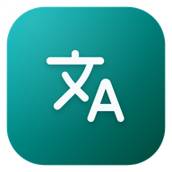
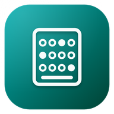
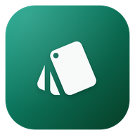
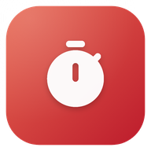
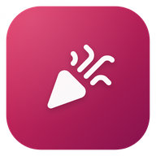
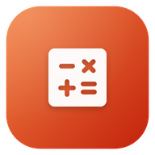
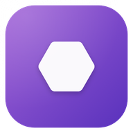
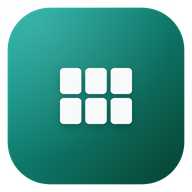
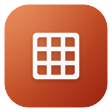
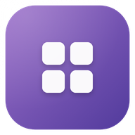

Amor
ספרדית לדוברי אנגלית עם לולה התוכית: שיעורים, דיבור וסיפוריםLearn Spanish with Lola the parrot: lessons, speaking and stories
🛍️ חנות האפליקציות של Magmanet🛍️ The Magmanet App Store
128 אפליקציות אנדרואיד ללמידה, לילדים, למוזיקה, לכושר ולחיים עצמם. מורידים, מתקינים ומתחילים.128 Android apps for learning, kids, music, fitness and everyday life. Download, install, enjoy.
ספרדית לדוברי אנגלית עם לולה התוכית: שיעורים, דיבור וסיפוריםLearn Spanish with Lola the parrot: lessons, speaking and stories
כל שאלות התיאוריה, תרגול חכם שמתמקד בטעויות ומבחנים מדומיםPass Israel's driving theory test: all pool questions and smart practice
לומדים איטלקית עם שירים מקוריים, שיעורים קצרים ויונה שרהLearn Italian through original songs, short lessons and a singing pigeon
לדעת מה מותר מול שוטר – ולהישאר רגועיםKnow your rights with Israeli police – and stay calm
הכנה למבחני מיון ממוחשבים: אבחון, תרגול חשיבה, סימולציות וראיוןPrep for computerized screening tests: diagnostic, practice, interview

אוצר מילים וביטויים בספרדית, צרפתית, גרמנית ואיטלקית, בכמה דקות ביוםBite-sized daily vocabulary in Spanish, French, German and Italian

הכנה חינמית לפסיכומטרי – מילולי, כמותי, אנגלית וכתיבהFree psychometric test prep – verbal, quantitative, English and writing
לומדים כל דבר עם כרטיסיות וחזרה מרווחת חכמהLearn anything with spaced-repetition flashcards
לומדים ספרדית עם שירים מקוריים ולולה התוכית, מעברית או מאנגליתLearn Spanish through original songs with Lola the parrot
מאכילים, מלבישים ומפנקים את מיצי החתולה, מנהלים פיצרייה וטסים לעולםFeed and dress up Mitzi the cat, run her pizzeria and travel the world
מצלמים סלפי במראה ומקבלים דמות מצוירת משלכם, עם סטיקרים וריקודיםTurn a mirror selfie into your own cartoon avatar, stickers and dances
משחקי מוטוריקה ותרגול נהיגה לילדים ולמבוגרים עם דיספרקסיהMotor-skill games and learner-driver practice for dyspraxia (DCD)
מרהטים בית בובות חמים, מזיזים את המשפחה ומשחקים בדמיון – בלי אינטרנטFurnish a cozy doll house, move the family around and play pretend – offline
מברישים, קולעים צמות ומאכילים את הפוני, מנקים את האורווה ויוצאים לרכיבה!Brush, braid and feed your pony, clean the stable and ride gentle trails!
גינה קסומה ונעימה שגדלה בזמן אמת: כמה דקות רגועות ביום.A cozy magic garden that grows in real time: a few calm minutes a day.
מתחפשים בסוד, צועדים על המסלול ומריעים לכולם! מסיבה ל־2–8 טלפוניםDress up in secret, walk the runway, cheer for everyone! A party for 2–8 phones
אופים, מקשטים ומגישים מאפים מתוקים ללקוחות חמודים. בלי פרסומות!Bake, decorate and serve sweet treats to cute animal customers. No ads!
מעצבים בגדים, מלבישים דוגמנים ודוגמניות ועולים למסלול בתצוגת אופנה משלכם!Design clothes, dress diverse models and put on your own runway show!
יוצרים בת ים, שוחים, עוזרים לחברים בים ושומרים על הים נקי. בלי פרסומות!Create your mermaid, swim, help sea friends and keep the ocean clean. No ads!
טריוויה, משחקי האזנה ומשחקי חברים לכל מי שגדל על המוזיקה של שנות ה-80Fact-based trivia, listening games and party play for fans of 80s music
לומדים גיטרה צעד אחר צעד, עם שיעורים שמקשיבים לכם מנגניםLearn guitar step by step with lessons that listen to you play
טאבים ותווים אינטראקטיביים לגיטרה, בס, יוקלילי ותופיםInteractive tabs for guitar, bass, ukulele and drums, with mic play-along
שמיעה מוזיקלית וקול מדויק, כל יוםSharper ears and a truer voice, every day
מטרונום, צלילי כיוון, אימון שמיעה ויומן תרגול במקום אחדMetronome, reference tones, ear training and a practice log in one app
אקורדים לכל שיר, תוך שניותChords for any song, in seconds
12 חידות היגיון, מספרים ומילים, סט יומי ורמזים שמלמדים איך לפתורTwelve logic, number and word puzzles, a Daily Set and hints that teach
מוצאים את המילה הסודית לפי המשמעות – וכל ניחוש מראה כמה התקרבתםFind the secret word by meaning: every guess shows how close you are
250 אתגרים ל-2 עד 8 חברים: בוחרים, משחקים, נותנים ציונים ומכתירים מנצח250 challenges for 2-8 friends: play, score each other, crown a winner
12 משחקים מקוריים ברוח המחשבים הביתיים הראשונים12 original games in the spirit of the first home computers
כמה טוב החברים באמת מכירים אתכם?How well do your friends really know you?
תרגילי ריכוז, תגובה ויד יציבה לנהגים גרועים – מצחיק, קצר ובלי אינטרנטFunny focus, reaction and steady-hand drills for bad drivers – short and offline
משחק יומי: נחשו מחירים אמיתיים מהסופר וגלו איפה הכי זולDaily game: guess real supermarket prices, learn where it's cheapest
חמש אותיות, שישה ניסיונות, מילה אחת ביום.Five letters, six guesses, one word a day.
חמש חידות אימוג'י ביום. תצליחו לפענח?Five emoji riddles a day. Can you read them?

לומדים אסטרטגיה בסיסית וספירת קלפים, בכסף משחק בלבדMaster basic strategy and card counting with play money only
רושמים סטים, שוברים שיאים ורואים את ההתקדמותLog your sets, beat your records, see your progress
שקט ושמחה מבפנים, בלי תלות במשהו חיצוניCalm and joy from within, without depending on anything outside
כמה דקות של שקט – עם הנחיה, טיימר או תרגיל נשימהA few calm minutes – guided, timed or breathing
רגע ביום לעצור, להרגיש ולכתוב – באופן פרטי לגמריA moment a day to check in and reflect – privately
תוכנית אימונים שבועית שבאמת עוקבים אחריהPlan your training week and actually stick to it
מצלמים טקסט – ושומעים אותו, בעברית ובאנגליתPoint the camera – and hear the text, in Hebrew and English
מתעדים את הלילות ומבינים מה באמת משפיע על השינהLog your nights and learn what really affects your sleep
שותים מספיק מים – עם יעד אישי ותזכורות עדינותDrink enough water with a personal goal and gentle nudges
כל סרטוני האימון שאהבתם, במקום אחד – ומוכנים לאימוןSave training videos in one tap, then train with them

מתרכזים בפרצים קצרים, נחים בזמן ומספיקים יותרFocus in short bursts, rest on time, get more done
כותבים משימה במשפט אחד – והאפליקציה מבינה את השארType a task in plain words – the app handles the rest
סופרים את הימים לרגעים הגדולים – ואת הימים מאזCount down to big moments – or count up from them
מסלול, הזמנות, רשימת אריזה ותקציב משותף לכל טיולItinerary, bookings, packing and a shared budget for every trip

מוזמנים, משימות, תקציב והושבה – כל האירוע במקום אחדGuests, tasks, budget and seating – your whole event in one place
בונים הרגלים טובים, יום אחרי יום, עם רצפים שמדרבניםBuild good habits day by day with motivating streaks
פתקים מהירים עם תיקיות, תגיות וחיפוש שמוצא הכולQuick notes with folders, tags and search that finds it all
הדרך למיליון: הון נקי, תקציב, רעיונות להכנסה ושיעורים על כסףPlan your path to a million: net worth, budget, income ideas and lessons
מי חייב למי – בכמה שפחות העברותWho owes whom, in the fewest transfers
ברוטו, נטו, מס וזכויות – לפי חוקי 2026Gross, net, tax and rights – by 2026 rules
כמה עולה הנסיעה, ואיך מתחלקים – בלי ויכוחיםWhat the trip costs, and how to split it – no arguments
תקציב מעטפות: לכל שקל יש תפקידEnvelope budgeting that gives every dollar a job
רושמים הוצאות ורואים לאן הכסף הולךLog spending and see where your money goes
10 המניות שירדו ו-10 שעלו הכי הרבה בסגירה האחרונהThe 10 biggest decliners and gainers at the last close
איפה הסל שלכם הכי זול? השוואת מחירים בסופרמרקטיםWhere is your basket cheapest? Supermarket price comparison

מחשבים טיפ ומתחלקים בחשבון בשניותSplit bills and calculate tips instantly
בודקים בעצמכם אם מגיע לכם כסף ממס הכנסהFind out if the tax office owes you money
ניהול סטודיו ליוגה ולכושר: מערכת שעות, מתאמנים, מנויים ותשלומיםRun your yoga or fitness studio: classes, students, memberships, payments
מתמחרים עבודות שיפוץ ושולחים הצעת מחיר PDF מקצועית בעבריתPrice renovation jobs and send professional Hebrew PDF quotes
רגיל, מדעי, מתכנתים וגרפים – מחשבון אחד לכל דבר.Standard, scientific, programmer and graphing – one calculator for everything.
תאריך עברי, חגים, זמני היום ושבת – בלי אינטרנט.Hebrew date, holidays, zmanim and Shabbat – offline.
מכתבים רשמיים, בשפה פשוטה.Official letters, in plain language.
סיסמאות חזקות, צירופי מילים וקודי PIN – הכול נוצר במכשירStrong passwords, passphrases and PINs – generated on your device
סורקים ויוצרים קודי QR וברקודים, עם בדיקת בטיחות לקישוריםScan and create QR codes and barcodes, with link safety checks
סכמו את השנה שלכם באימוג׳ים ושתפוSum up your year in emojis and share it
הופכים לחתול, לאריה או לחד־קרן – בהקשה אחת!Become a cat, a lion or a unicorn – in one tap!
מקליטים את הקול והופכים אותו לסנאי, לרובוט, לחייזר…Record your voice and turn it into a chipmunk, a robot, an alien…
13 קטגוריות של יחידות, שערי מטבע עדכניים וממיר למטבח13 unit categories, up-to-date currency rates and a kitchen converter
מזג האוויר עכשיו, תחזית שעתית ותחזית ל־10 ימיםCurrent conditions, hourly outlook and a 10-day forecast
מדפי קריאה, סריקת ברקוד, זמני קריאה ויעד שנתיReading shelves, barcode scanning, reading sessions and a yearly goal
מתכונים, מצב בישול עם טיימרים, תכנון ארוחות ורשימת קניותRecipes, cooking mode with timers, meal planning and a shopping list
דלק, טיפולים, עלויות ותזכורות – לכל הרכבים שלכםFuel, services, costs and reminders for all your vehicles
ציטוט מעורר השראה בכל יום, עם מועדפים, אוספים ושיתוףAn inspiring quote every day, with favorites, collections and sharing
שגרה יומית, חיסונים, תרופות ומשקל – הבריאות של חיית המחמדDaily routines, vaccines, meds and weight for your pet's health
כל רשימות הציוד של הילדים – ורשימת קניות אחת לחנותAll your kids' supplies lists – and one shopping list for the store
לא שוכחים להשקות: תזכורות השקיה ודישון לכל צמח בביתNever forget to water: watering and feeding reminders for every plant
סטייליסטית אישית בכיס: פלטת צבעים, לוקים לכל אירוע והארון שלכםYour pocket stylist: color palette, outfits for every occasion, your closet
מתכונים קלאסיים, טכניקות, הבר שלכם ותחליפים חכמיםClassic recipes, techniques, your home bar and smart substitutions
רשימות קניות חכמות שמסתדרות לבד לפי מחלקות בסופרSmart grocery lists that sort themselves by store aisle
מאכילים, מלבישים ומפנקים את מיצי החתולה, מנהלים פיצרייה וטסים לעולםFeed and dress up Mitzi the cat, run her pizzeria and travel the world
12 חידות היגיון, מספרים ומילים, סט יומי ורמזים שמלמדים איך לפתורTwelve logic, number and word puzzles, a Daily Set and hints that teach
מצלמים סלפי במראה ומקבלים דמות מצוירת משלכם, עם סטיקרים וריקודיםTurn a mirror selfie into your own cartoon avatar, stickers and dances
הדרך למיליון: הון נקי, תקציב, רעיונות להכנסה ושיעורים על כסףPlan your path to a million: net worth, budget, income ideas and lessons
ספרדית לדוברי אנגלית עם לולה התוכית: שיעורים, דיבור וסיפוריםLearn Spanish with Lola the parrot: lessons, speaking and stories
ניהול סטודיו ליוגה ולכושר: מערכת שעות, מתאמנים, מנויים ותשלומיםRun your yoga or fitness studio: classes, students, memberships, payments
טריוויה, משחקי האזנה ומשחקי חברים לכל מי שגדל על המוזיקה של שנות ה-80Fact-based trivia, listening games and party play for fans of 80s music
מוצאים את המילה הסודית לפי המשמעות – וכל ניחוש מראה כמה התקרבתםFind the secret word by meaning: every guess shows how close you are
כל שאלות התיאוריה, תרגול חכם שמתמקד בטעויות ומבחנים מדומיםPass Israel's driving theory test: all pool questions and smart practice
לומדים גיטרה צעד אחר צעד, עם שיעורים שמקשיבים לכם מנגניםLearn guitar step by step with lessons that listen to you play
טאבים ותווים אינטראקטיביים לגיטרה, בס, יוקלילי ותופיםInteractive tabs for guitar, bass, ukulele and drums, with mic play-along
לומדים איטלקית עם שירים מקוריים, שיעורים קצרים ויונה שרהLearn Italian through original songs, short lessons and a singing pigeon
משחקי מוטוריקה ותרגול נהיגה לילדים ולמבוגרים עם דיספרקסיהMotor-skill games and learner-driver practice for dyspraxia (DCD)
250 אתגרים ל-2 עד 8 חברים: בוחרים, משחקים, נותנים ציונים ומכתירים מנצח250 challenges for 2-8 friends: play, score each other, crown a winner
12 משחקים מקוריים ברוח המחשבים הביתיים הראשונים12 original games in the spirit of the first home computers
רגיל, מדעי, מתכנתים וגרפים – מחשבון אחד לכל דבר.Standard, scientific, programmer and graphing – one calculator for everything.
שמיעה מוזיקלית וקול מדויק, כל יוםSharper ears and a truer voice, every day
מרהטים בית בובות חמים, מזיזים את המשפחה ומשחקים בדמיון – בלי אינטרנטFurnish a cozy doll house, move the family around and play pretend – offline
מברישים, קולעים צמות ומאכילים את הפוני, מנקים את האורווה ויוצאים לרכיבה!Brush, braid and feed your pony, clean the stable and ride gentle trails!
גינה קסומה ונעימה שגדלה בזמן אמת: כמה דקות רגועות ביום.A cozy magic garden that grows in real time: a few calm minutes a day.
לדעת מה מותר מול שוטר – ולהישאר רגועיםKnow your rights with Israeli police – and stay calm
מתחפשים בסוד, צועדים על המסלול ומריעים לכולם! מסיבה ל־2–8 טלפוניםDress up in secret, walk the runway, cheer for everyone! A party for 2–8 phones
כמה טוב החברים באמת מכירים אתכם?How well do your friends really know you?
אופים, מקשטים ומגישים מאפים מתוקים ללקוחות חמודים. בלי פרסומות!Bake, decorate and serve sweet treats to cute animal customers. No ads!
תרגילי ריכוז, תגובה ויד יציבה לנהגים גרועים – מצחיק, קצר ובלי אינטרנטFunny focus, reaction and steady-hand drills for bad drivers – short and offline
מעצבים בגדים, מלבישים דוגמנים ודוגמניות ועולים למסלול בתצוגת אופנה משלכם!Design clothes, dress diverse models and put on your own runway show!
יוצרים בת ים, שוחים, עוזרים לחברים בים ושומרים על הים נקי. בלי פרסומות!Create your mermaid, swim, help sea friends and keep the ocean clean. No ads!
משחק יומי: נחשו מחירים אמיתיים מהסופר וגלו איפה הכי זולDaily game: guess real supermarket prices, learn where it's cheapest
חמש אותיות, שישה ניסיונות, מילה אחת ביום.Five letters, six guesses, one word a day.
יום שלם ומתוק עם התינוק שלכם.A whole sweet day with your very own baby.
חמש חידות אימוג'י ביום. תצליחו לפענח?Five emoji riddles a day. Can you read them?
מקלחים, מייבשים, מסרקים ומלבישים חיות חמודות במספרה משלכם!Wash, dry, brush, trim and dress up cute animals in your own pet salon!
מי חייב למי – בכמה שפחות העברותWho owes whom, in the fewest transfers
הכנה למבחני מיון ממוחשבים: אבחון, תרגול חשיבה, סימולציות וראיוןPrep for computerized screening tests: diagnostic, practice, interview
מדפי קריאה, סריקת ברקוד, זמני קריאה ויעד שנתיReading shelves, barcode scanning, reading sessions and a yearly goal
רושמים סטים, שוברים שיאים ורואים את ההתקדמותLog your sets, beat your records, see your progress
מטרונום, צלילי כיוון, אימון שמיעה ויומן תרגול במקום אחדMetronome, reference tones, ear training and a practice log in one app
לומדים אסטרטגיה בסיסית וספירת קלפים, בכסף משחק בלבדMaster basic strategy and card counting with play money only
מתכונים, מצב בישול עם טיימרים, תכנון ארוחות ורשימת קניותRecipes, cooking mode with timers, meal planning and a shopping list
שקט ושמחה מבפנים, בלי תלות במשהו חיצוניCalm and joy from within, without depending on anything outside
כמה דקות של שקט – עם הנחיה, טיימר או תרגיל נשימהA few calm minutes – guided, timed or breathing
דלק, טיפולים, עלויות ותזכורות – לכל הרכבים שלכםFuel, services, costs and reminders for all your vehicles
ברוטו, נטו, מס וזכויות – לפי חוקי 2026Gross, net, tax and rights – by 2026 rules
תאריך עברי, חגים, זמני היום ושבת – בלי אינטרנט.Hebrew date, holidays, zmanim and Shabbat – offline.
לומדים ברידג׳ חוזים: הכרזה, משחק ידיים והגנהLearn contract bridge: bidding, declarer play and defense
חבר ידידותי שגורם לילדים לדבר אנגלית: שיחות, סיפורים ומשחקיםA friendly buddy that gets kids talking English: chats, stories, games
רגע ביום לעצור, להרגיש ולכתוב – באופן פרטי לגמריA moment a day to check in and reflect – privately
תוכנית אימונים שבועית שבאמת עוקבים אחריהPlan your training week and actually stick to it
מתרכזים בפרצים קצרים, נחים בזמן ומספיקים יותרFocus in short bursts, rest on time, get more done
ציטוט מעורר השראה בכל יום, עם מועדפים, אוספים ושיתוףAn inspiring quote every day, with favorites, collections and sharing
שגרה יומית, חיסונים, תרופות ומשקל – הבריאות של חיית המחמדDaily routines, vaccines, meds and weight for your pet's health
לומדים אסטרטגיית פוקר צעד אחר צעד, בלי כסף אמיתיLearn winning poker strategy step by step, no real money
אקורדים לכל שיר, תוך שניותChords for any song, in seconds
מכתבים רשמיים, בשפה פשוטה.Official letters, in plain language.
720 שאלות ב-12 קטגוריות, אתגר יומי, מצבי משחק לחברים וטבלאות שיאים720 questions in 12 categories, a daily challenge, party modes and leaderboards
12 סוגי פאזלים צבעוניים ומשחקי חשיבה שגדלים יחד עם הילד12 colorful puzzle games that grow with your child
מצלמים טקסט – ושומעים אותו, בעברית ובאנגליתPoint the camera – and hear the text, in Hebrew and English
חידות שחמט סביב הקרבות מבריקות וכל טקטיקה אחרת – כל מסע נבדקChess puzzles built around brilliant sacrifices, every line verified
כמה עולה הנסיעה, ואיך מתחלקים – בלי ויכוחיםWhat the trip costs, and how to split it – no arguments
סיסמאות חזקות, צירופי מילים וקודי PIN – הכול נוצר במכשירStrong passwords, passphrases and PINs – generated on your device
מתמחרים עבודות שיפוץ ושולחים הצעת מחיר PDF מקצועית בעבריתPrice renovation jobs and send professional Hebrew PDF quotes
בוחרים גיבור, מקום וחבר, ומקבלים סיפור לפני השינה חדש ומאויר, בהקראהPick a hero, a place and a friend: a new illustrated bedtime story, read aloud
הילדים מסמנים מטלות, אוספים כוכבים וחוסכים לפרסים שאתם קובעים. בלי פרסומות!Kids tap chores done, earn stars and save up for rewards you set. No ads!
סורקים ויוצרים קודי QR וברקודים, עם בדיקת בטיחות לקישוריםScan and create QR codes and barcodes, with link safety checks
פאזל בלוקים רגוע וצבעוניA calm, colourful block puzzle
מתעדים את הלילות ומבינים מה באמת משפיע על השינהLog your nights and learn what really affects your sleep
אוצר מילים וביטויים בספרדית, צרפתית, גרמנית ואיטלקית, בכמה דקות ביוםBite-sized daily vocabulary in Spanish, French, German and Italian
לומדים לכתוב אותיות בעברית ובאנגלית ומספרים עם האצבע. כוכבים, בלי פרסומות!Trace Hebrew & English letters and numbers with a finger. Stars, no ads!
שרים, שואגים, לוחשים ומתופפים בדרך לפודיום!Sing, roar, whisper and beatbox your way to the podium!
תקציב מעטפות: לכל שקל יש תפקידEnvelope budgeting that gives every dollar a job
כותבים, מציירים, מנחשים… ורואים איך הכול משתבש!Write, draw, guess… and watch it all go wrong!
רושמים הוצאות ורואים לאן הכסף הולךLog spending and see where your money goes
כל רשימות הציוד של הילדים – ורשימת קניות אחת לחנותAll your kids' supplies lists – and one shopping list for the store
סכמו את השנה שלכם באימוג׳ים ושתפוSum up your year in emojis and share it
חמש שאלות ביום על מה שקרה בתאריך הזהFive questions a day about what happened on this date
מסתכלים טוב – ומוצאים את כל החפצים המוסתרים!Look closely and find every hidden thing!
מוזגים, ממיינים, נושמים. פאזל צבעוני ורגוע.Pour, sort, breathe. A calm, colourful puzzle.
הופכים לחתול, לאריה או לחד־קרן – בהקשה אחת!Become a cat, a lion or a unicorn – in one tap!
מקום אחד ביום. מצאו אותו על מפת ישראל.One place a day. Find it on the map of Israel.
כמה טוב אתם באמת מכירים?How well do you two really know each other?

מערמים, מחליקים ומנקים משושים צבעוניים – ברוגעStack, slide and clear calm, colourful hexagons
מקליטים את הקול והופכים אותו לסנאי, לרובוט, לחייזר…Record your voice and turn it into a chipmunk, a robot, an alien…
תירוץ מצחיק לכל מצב. נערו בשביל עוד אחד!A funny excuse for every situation. Shake for a new one!
שאלונים מצחיקים על החיים בישראלFunny, kind quizzes about Israeli life
10 המניות שירדו ו-10 שעלו הכי הרבה בסגירה האחרונהThe 10 biggest decliners and gainers at the last close
13 משחקי חשיבה לגילאי 5–7, עם הוראות קוליות ובלי צורך לקרוא13 thinking games for ages 5-7, spoken aloud so no reading is needed
הכנה חינמית לפסיכומטרי – מילולי, כמותי, אנגלית וכתיבהFree psychometric test prep – verbal, quantitative, English and writing
13 קטגוריות של יחידות, שערי מטבע עדכניים וממיר למטבח13 unit categories, up-to-date currency rates and a kitchen converter
איפה הסל שלכם הכי זול? השוואת מחירים בסופרמרקטיםWhere is your basket cheapest? Supermarket price comparison
כותבים משימה במשפט אחד – והאפליקציה מבינה את השארType a task in plain words – the app handles the rest
טקסס הולדם עם חברים – כל אחד בטלפון שלוTexas Hold'em with friends – everyone on their own phone
לומדים את לוח הכפל במרוץ! לבד, מול אח או אחות, או על שני טלפוניםRace to learn your times tables! Solo, with a sibling, or on two phones
לא שוכחים להשקות: תזכורות השקיה ודישון לכל צמח בביתNever forget to water: watering and feeding reminders for every plant
סופרים את הימים לרגעים הגדולים – ואת הימים מאזCount down to big moments – or count up from them
שש־בש על לוח עץ – מול המחשב או עם חברBackgammon on a wooden board – vs the computer or a friend
לומדים כל דבר עם כרטיסיות וחזרה מרווחת חכמהLearn anything with spaced-repetition flashcards

רצפים, קבוצות ושולחן משותף אחדRuns, groups and one shared table
לומדים ספרדית עם שירים מקוריים ולולה התוכית, מעברית או מאנגליתLearn Spanish through original songs with Lola the parrot
חמש קוביות, שלוש הטלות, שלוש עשרה משבצותFive dice, three rolls, thirteen boxes
מחשבים טיפ ומתחלקים בחשבון בשניותSplit bills and calculate tips instantly
בודקים בעצמכם אם מגיע לכם כסף ממס הכנסהFind out if the tax office owes you money
13 עולמות של חידות היגיון, מספרים ותכנות לגילאי 7–913 worlds of logic, math and coding puzzles for ages 7-9

בינגו למשפחות, כיתות ומועדונים – בלי כסףBingo for families, classrooms and clubs – no money
סטייליסטית אישית בכיס: פלטת צבעים, לוקים לכל אירוע והארון שלכםYour pocket stylist: color palette, outfits for every occasion, your closet
מסלול, הזמנות, רשימת אריזה ותקציב משותף לכל טיולItinerary, bookings, packing and a shared budget for every trip
מזג האוויר עכשיו, תחזית שעתית ותחזית ל־10 ימיםCurrent conditions, hourly outlook and a 10-day forecast
ערב שעשועון בבית: מסך אחד הוא האולפן, כל טלפון הוא באזרA quiz-show night at home: one screen is the studio, every phone a buzzer
כולם יודעים איפה הם. חוץ מאחדEveryone knows where they are. Except one
מוזמנים, משימות, תקציב והושבה – כל האירוע במקום אחדGuests, tasks, budget and seating – your whole event in one place
ציד אוצרות בבית – חידות, קודי QR ומשימותA treasure hunt at home – riddles, QR codes and challenges
שותים מספיק מים – עם יעד אישי ותזכורות עדינותDrink enough water with a personal goal and gentle nudges
מתכונים קלאסיים, טכניקות, הבר שלכם ותחליפים חכמיםClassic recipes, techniques, your home bar and smart substitutions
רשימות קניות חכמות שמסתדרות לבד לפי מחלקות בסופרSmart grocery lists that sort themselves by store aisle
תארו את המילה בלי להגיד את המילים האסורותDescribe the word without saying the forbidden ones
שני דו־קרבות קלאסיים: צדים את הצי, מסדרים ארבעTwo classic duels: hunt the fleet, line up four
בונים הרגלים טובים, יום אחרי יום, עם רצפים שמדרבניםBuild good habits day by day with motivating streaks
כל סרטוני האימון שאהבתם, במקום אחד – ומוכנים לאימוןSave training videos in one tap, then train with them
ילדים והורים באותו סיבוב – כל אחד עם שאלה בגובה שלוKids and parents in one round – each with a question their size
תפקידים סודיים. לילה אחד. מי משקר?Secret roles. One night. Who is lying?
התאימו צבע, מספר או סמל – ותהיו הראשונים להיפטר מהקלפיםMatch colour, number or symbol – and be first to empty your hand
כל אחד מוסיף חלק – ורק בסוף שומעים את כל הסיפורEveryone adds a part – the whole story comes at the end
מרוץ חשבון ומילים – כל ילד ברמה שלוA math and word race – every kid at their own level
רוקדים – וכשהמוזיקה נעצרת, פסל!Dance – and when the music stops, freeze!
פתקים מהירים עם תיקיות, תגיות וחיפוש שמוצא הכולQuick notes with folders, tags and search that finds it all
שני משחקי לוח קלאסיים, אפליקציה אחתTwo classic board games, one app
הטלפון על המצח – החברים נותנים רמזיםPhone on your forehead – friends give the hints
מציירים, מנחשים וצוחקים ביחדDraw it, guess it, laugh together

משחק זיכרון ענק על כמה טלפוניםA giant memory game across several phones
לא נמצאו אפליקציות. נסו מילה אחרת.No apps found. Try another word.
התקנה פשוטהEasy install
האפליקציות מופצות כקובץ APK ישירות מ-GitHub. ההתקנה לוקחת פחות מדקה.The apps are distributed as APK files straight from GitHub. Installing takes under a minute.
פותחים את עמוד האפליקציה בטלפון ולוחצים על "הורדת APK". במחשב? סורקים את קוד ה-QR.Open the app page on your phone and tap "Download APK". On a computer? Scan the QR code.
בסיום ההורדה לוחצים על ההתראה, או פותחים את הקובץ מתיקיית ההורדות.When the download finishes, tap the notification or open the file from your Downloads folder.
בפעם הראשונה אנדרואיד ישאל אם לאפשר לדפדפן להתקין אפליקציות. מאשרים "התקנה ממקורות לא ידועים" וחוזרים.The first time, Android asks whether your browser may install apps. Allow "Install unknown apps" and go back.
לוחצים "התקנה" והאפליקציה מופיעה במסך הבית. לעדכון מורידים שוב מאותו קישור, והגרסה החדשה מותקנת מעל הישנה.Tap "Install" and the app appears on your home screen. To update, download again from the same link and it installs over the old one.
כל הקבצים נבנים ונחתמים על ידינו ומתפרסמים ישירות בדף הגרסאות ב-GitHub. Play Protect עשוי להציג אזהרה על אפליקציה שלא הגיעה מהחנות; אפשר לבחור "להתקין בכל זאת".Every file is built and signed by us and published straight to the GitHub releases page. Play Protect may warn about an app that didn't come from the store; you can choose "Install anyway".
הקישורים תמיד מורידים את הגרסה האחרונה. מורידים ומתקינים שוב, וכל הנתונים שלכם נשמרים.Links always download the newest version. Download and install again, and your data is kept.
לא. קובצי APK מיועדים לאנדרואיד בלבד (מומלץ אנדרואיד 7 ומעלה, מעבד 64 ביט).No. APK files are for Android only (Android 7+ with a 64-bit processor recommended).
מוודאים שיש מספיק מקום פנוי ושהקובץ ירד עד הסוף. אם מותקנת גרסה ישנה שנחתמה אחרת, מסירים אותה ומתקינים מחדש.Make sure there's enough free space and the download completed. If an older version signed differently is installed, uninstall it first.